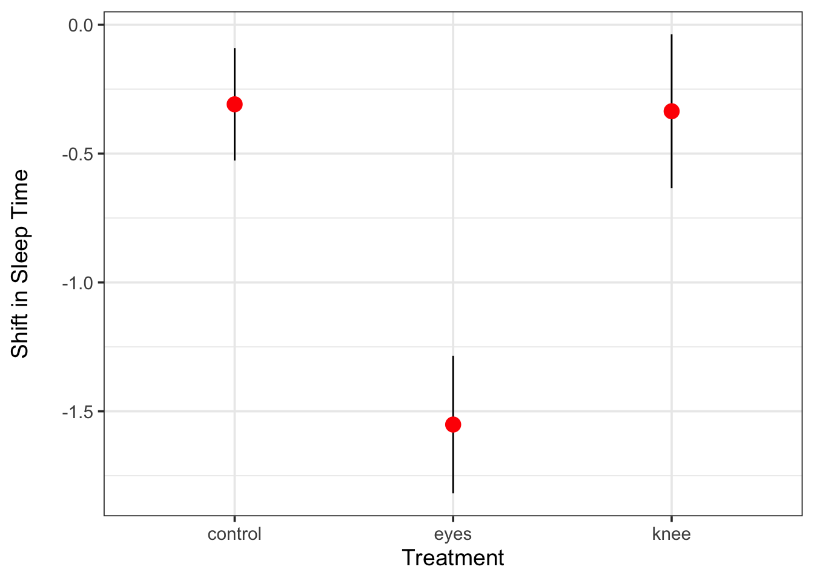
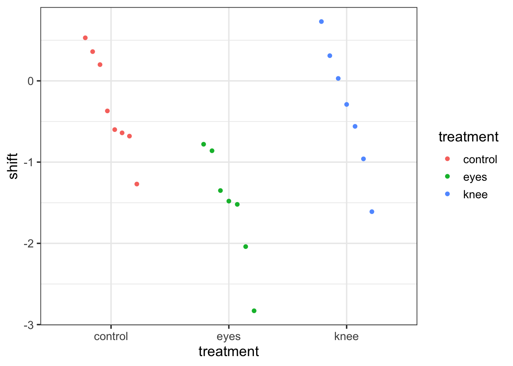
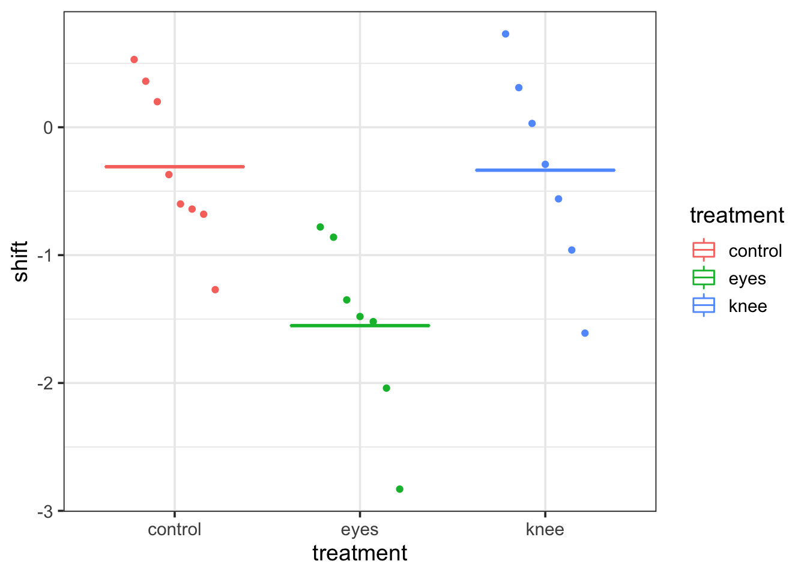
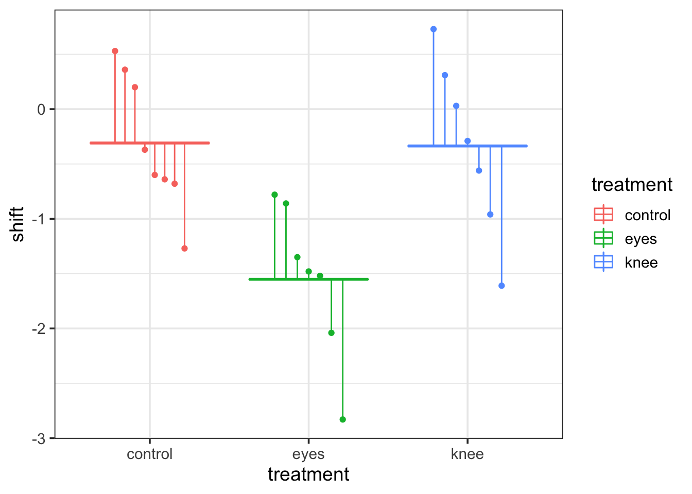
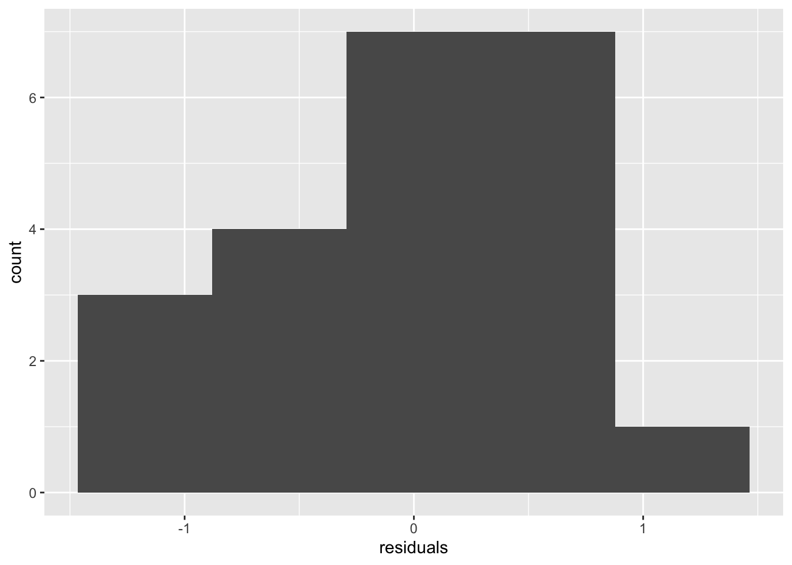
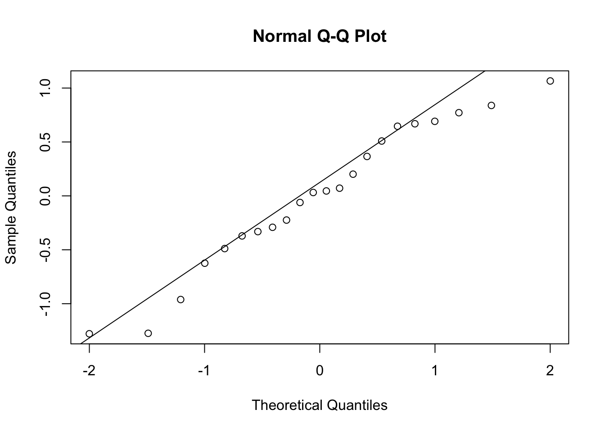
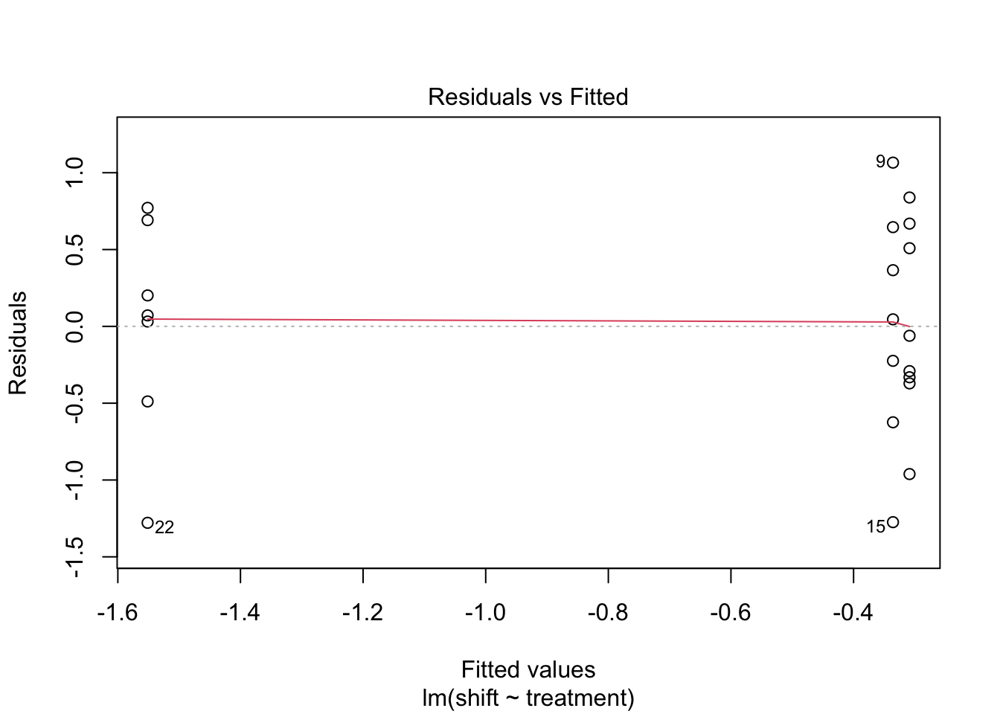
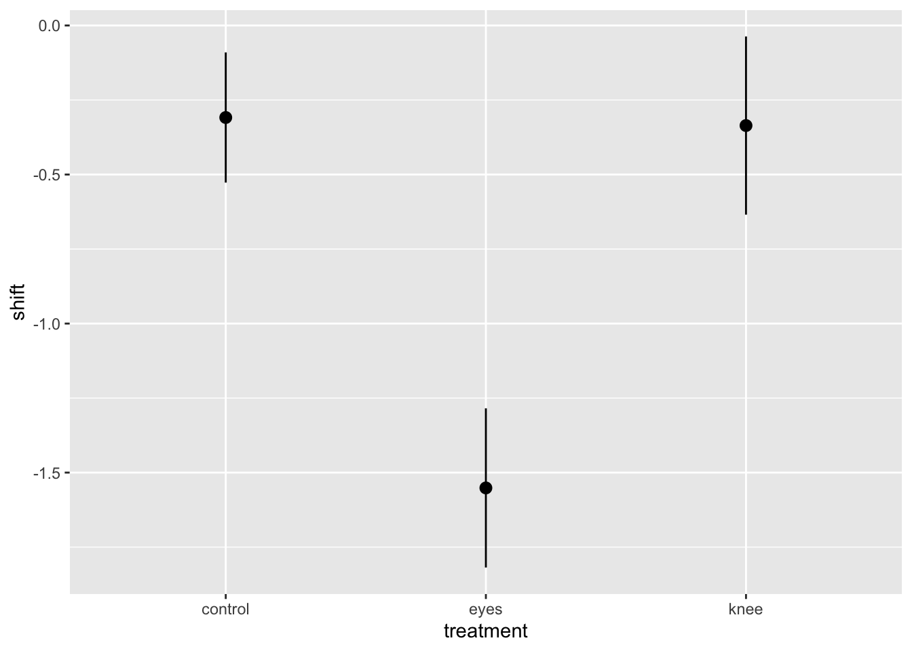
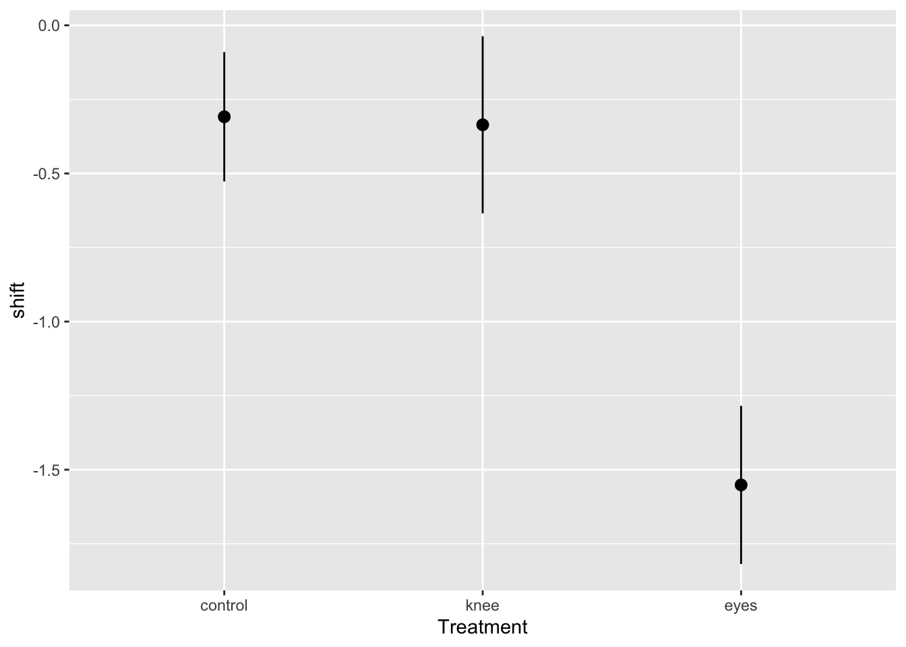
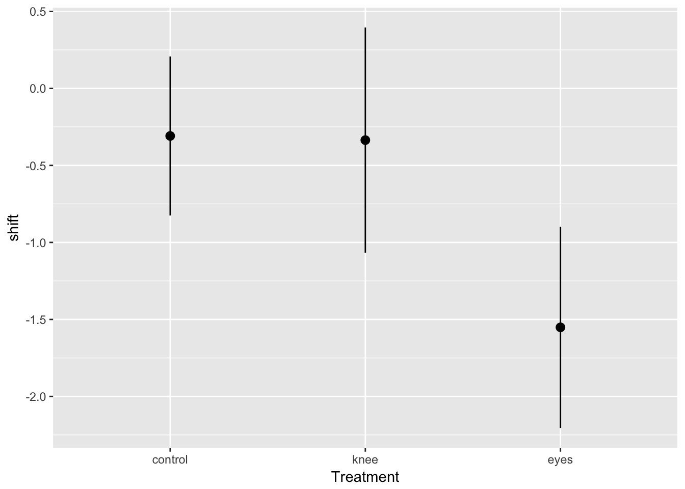

Analysis of Multiple Groups with ANOVA
Fighting Jet Lag
The Knee’s The Thing!

- Test if shining light behind knees or on eyes helped jet lag
- Also a control group with no light
- n=7
The Steps of Statistical Modeling
- What is your question?
- What model of the world matches your question?
- Build a test
- Evaluate test assumptions
- Evaluate test results
- Visualize
What question would you ask of this data?

Many Questions
- Are groups different from 0?
- Are groups different from each other?
- Are groups a meaningful explanatory variable?
Introducing ANOVA: Comparing Variation
Test: Is a ratio of variability from data generating process v. error generating process large?
Ratio of two normal distributions = F Distribution
How Does the World Work?
\[y_i = T_{control}\mu_{control} + T_{eye}\mu_{eye} + T_{knee}\mu_{knee} + \epsilon_i \]
\[T = \{0,1\} \]
\[\epsilon_i \sim N(0,\sigma) \]Linking your Model to Your Question
Data Generating Process:\[T_{control}\mu_{control} + T_{eye}\mu_{eye} + T_{knee}\mu_{knee}\]
VERSUS
Error Generating Process \[\epsilon_i \sim N(0,\sigma)\]
If groups are a meaningful explanatory variable, what does that imply about variability in the data?
Variability due to DGP versus EGP

Variability due to DGP versus EGP

Variability due to DGP versus EGP

The Steps of Statistical Modeling
- What is your question?
- What model of the world matches your question?
- Build a test
- Evaluate test assumptions
- Evaluate test results
- Visualize
Build a Linear Model
- Our model states that shift is determined by treatment
- This relationship is linear with a normal error distribution
Note: The ~ syntax can also be used for
t.test
The Steps of Statistical Modeling
- What is your question?
- What model of the world matches your question?
- Build a test
- Evaluate test assumptions
- Evaluate test results
- Visualize
Histogram of Residuals

QQ Plot

Residuals Versus Fitted

The Steps of Statistical Modeling
- What is your question?
- What model of the world matches your question?
- Build a test
- Evaluate test assumptions
- Evaluate test results
- Visualize
ANOVA and F-Tests
| F-Tests | T-Tests |
|---|---|
| Tests if data generating process different than error | Tests if parameter is different from 0 |
Essentially comparing a variation explained by a model with versus without a data generating process included.
F-Tests
F = Mean Square Variability Explained by Model / Mean Square Error
DF for Numerator = k-1 DF for Denominator = n-k
k = number of groups, n = sample size
F-Table
| Df | Sum Sq | Mean Sq | F value | Pr(>F) | |
|---|---|---|---|---|---|
| treatment | 2 | 7.224492 | 3.6122459 | 7.289449 | 0.0044723 |
| Residuals | 19 | 9.415345 | 0.4955445 | NA | NA |
The Steps of Statistical Modeling
- What is your question?
- What model of the world matches your question?
- Build a test
- Evaluate test assumptions
- Evaluate test results
- Visualize
Visualize the Model Means and SE

Muck with Order, Colors, etc.

Show CI instead of SE

Faded Examples
- Let’s walk through an example
- Then I’ll give you an example to work through, but with some code edited out
This analysis
jetlag <- read.csv("./data/anova/15e1KneesWhoSayNight.csv")
#fit
jetlag_mod <- lm(shift ~ treatment, data=jetlag)
#Assumptions
plot(jetlag_mod, which=1)
plot(jetlag_mod, which=2)
#Results
anova(jetlag_mod)
#Visualize
ggplot(data = jetlag, mapping=aes(x=treatment, y=shift)) +
stat_summary(fun.data=mean_se)Nematode Lifespans!
nemetodes <- read.csv("./data/anova/15q19NematodeLifespan.csv")
#fit
nem_mod <- lm(_______ ~ _______, data=nemetodes)
#Assumptions
plot(nem_mod, which=1)
plot(nem_mod, which=2)
#Results
anova(_______)
#Visualize
ggplot(data = nemetodes, mapping=aes(x=_______, y=_______)) +
stat_summary(fun.data=mean_se)